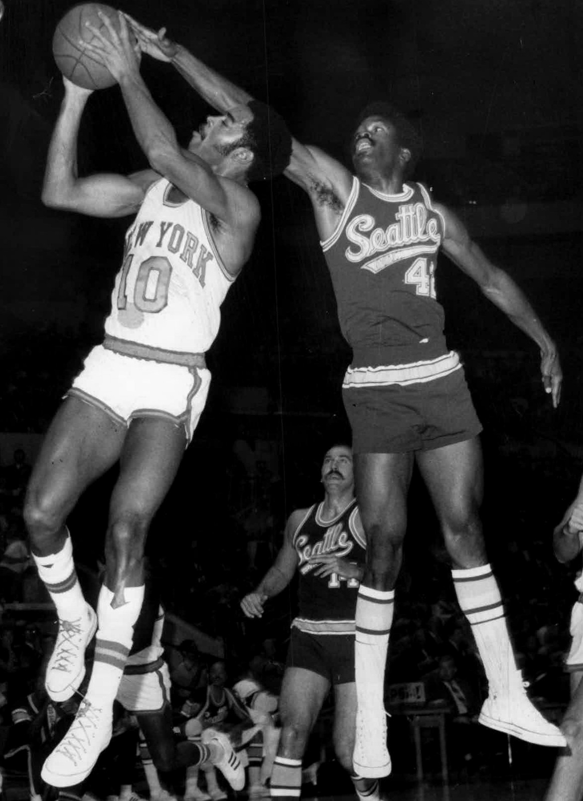
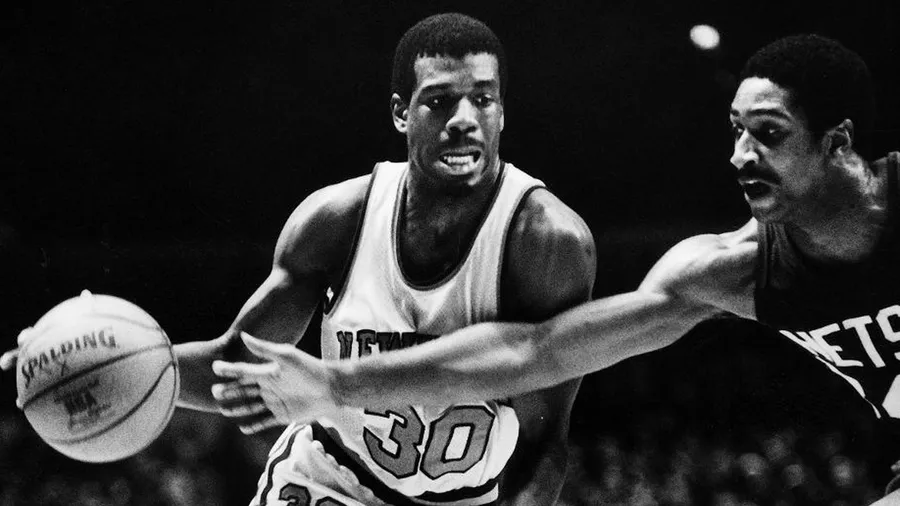
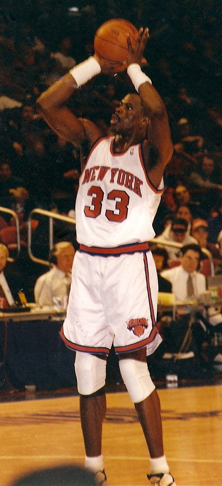
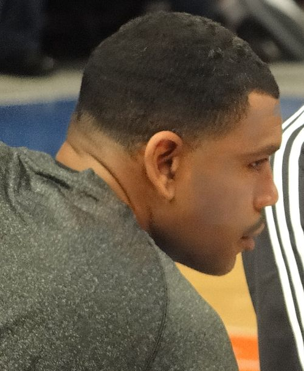
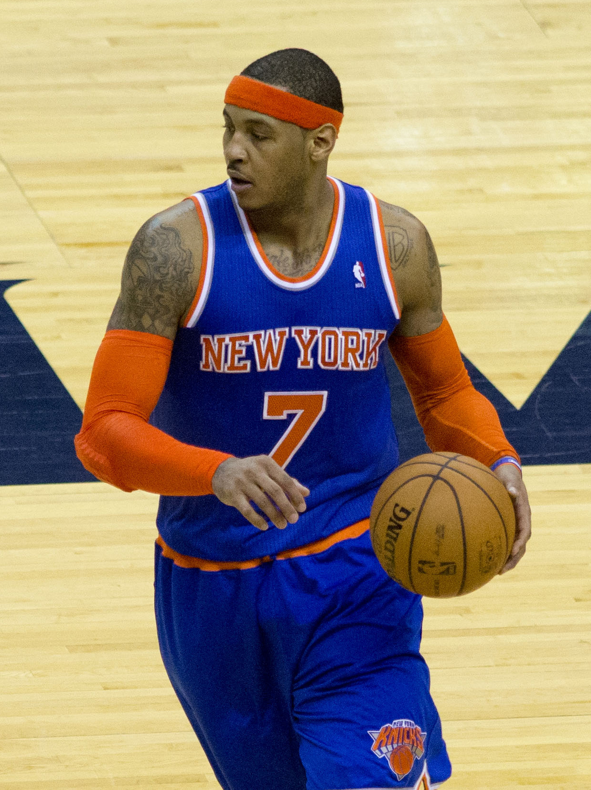
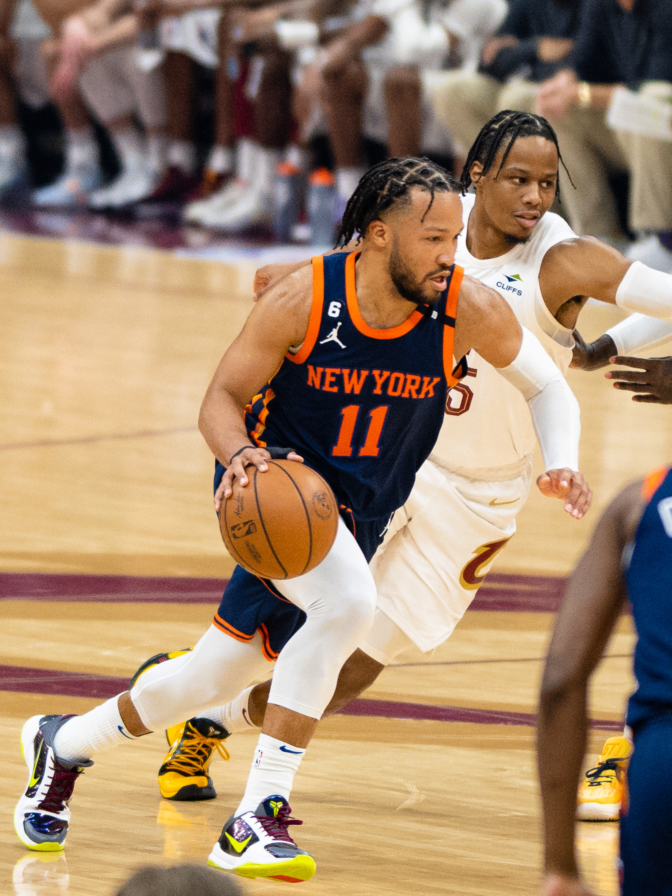

• Behind Willis Reed battling injury and scoring the first two baskets of the game, and Walt “Clyde” Frazier’s 36 points and 19 assists, the Knicks defeated the Lakers, 113-99, in Game 7 of the NBA Finals at Madison Square Garden, marking the first championship in franchise history. Reed took home the Finals MVP award as the Knicks took down a team featuring three all-time greats in Jerry West, Wilt Chamberlain, and Elgin Baylor.
• Almost three years to the day after their first championship, the Knicks defeated the Lakers in Los Angeles, 102-93, to win their second title, this time in dominant fashion, four games to one. Earl “The Pearl” Monroe (23 points) and Bill Bradley (20 points, seven rebounds, and five assists) led the way for New York, and Willis Reed was awarded his second Finals MVP. The special 1973 team featured six Hall of Fame players: Walt Frazier, Willis Reed, Dave DeBusschere, Earl Monroe, Jerry Lucas, and Bill Bradley. The legendary Red Holzman was also inducted as a coach.
• In Game 2 of the Eastern Conference Finals against the Chicago Bulls, guard John Starks dunked the ball over Michael Jordan, the best player in the NBA at the time and arguably the greatest ever. The Knicks won the game to take a 2-0 series lead, but the Bulls won the next four games on the way to their third straight NBA title.
• Also regarded as one of the greatest Knicks of all-time, Clyde spent 10 seasons with the Knicks (1967-1977), and the seven-time all-star averaged 18.9 points, 6.1 assists, 5.9 rebounds, and almost two steals. He had arguably the greatest performance in Knicks history in Game 7 of the 1970 finals, when he delivered 36 points and 19 assists to bring New York City its first NBA championship. He is a basketball Hall of Famer as a player and broadcaster.
• King spent just four seasons with the Knicks in the 1980s, but is remembered for his iconic 1984-1985 campaign, in which he led the NBA in scoring with 32.9 points per game. On January 31 and February 1, 1984, he scored 50 points in back-to-back games against the San Antonio Spurs and Dallas Mavericks. King also scored 60 points on Christmas Day in 1984 against the New Jersey Nets, a Knicks record at the time.
• The first pick in the 1985 NBA draft, Ewing is considered one of the greatest Knicks of all time and spent the first 15 years of his career with the team. He stuffed the stat sheet, averaging just under 23 points, over 10 rebounds, just under three blocks, and a steal, and he is the Knicks’ all-time leader in countless statistical categories. In 1994, he led the team to its first finals appearance in over 20 years.
• Known for his smooth jumper, Houston averaged 18.5 points in nine seasons with the Knicks from 1996 to 2005. He had two All-Star appearances and helped the Knicks make history in 1999 by becoming the first eighth seed ever to reach the NBA Finals. This is the team’s most recent finals appearance.
• One of the greatest scorers in NBA history, “Melo” played seven seasons for the Knicks in the 2010s, during which he averaged just under 25 points, along with seven rebounds. Anthony won the NBA scoring title in the 2012-2013 season and led the Knicks to a 54-28 record. On January 24, 2014, Melo scored a Knicks and Madison Square Garden record 62 points in a win against the Charlotte Bobcats. Despite Anthony’s lack of team success in New York, being from Brooklyn, he is widely considered a New York basketball icon.
• Brunson is largely credited with leading the Knicks’ revival in the 2020s, and in three seasons with the team so far, he has averaged 26.4 points and 6.7 assists. He has been named an all-star twice, and in 2025, he led the team to its first Eastern Conference Finals appearance since 2000. With the two-time NCAA champion leading the way, Knicks fans have a lot to be excited about over the next few years!
